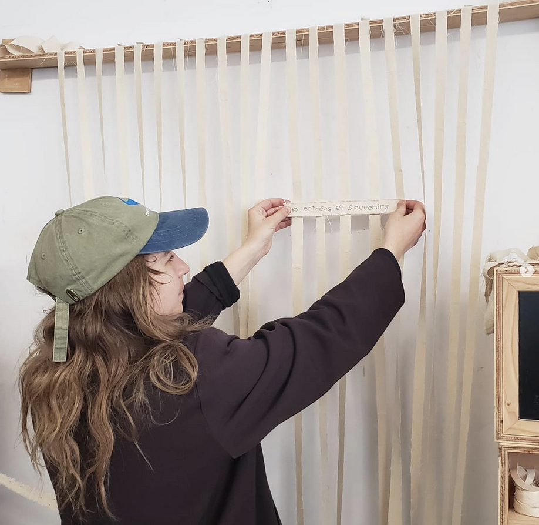

à propos

démarche
FR
Pascale Tétrault est une artiste pluridisciplinaire et poète basée à Montréal dont les œuvres se développent à la frontière de l’écriture et de l’art électronique. Ayant préalablement étudié en lettres et en média interactifs, elle complète en 2024, une maîtrise en Studio Arts à l’université Concordia où elle aborde, par la création de sculptures-machines, des enjeux relatifs aux langages, à la mémoire et l’artisanat technologique. Parallèlement, elle collabore, depuis 2019, en tant que technologue créative et programmeuse à la création de systèmes interactifs pour et avec plusieurs artistes et designers. Également pédagogue, elle offre depuis 6 ans des cours de programmation et de création numérique dans divers centres d’artistes et écoles dont la SAT, le Eastern Bloc et AdaX. Les œuvres de Pascale deviennent objets hybrides alliant matière, poésie et électronique. Ses pratiques d’artiste, de collaboratrice, de pédagogue et de technologue sont aujourd’hui indissociables et se nourrissent l’une et l’autre.
Pour le CV en format PDF, c'est iciEN
Pascale Tétrault is a pluridisciplinary artist and poet based in Montreal, whose work unfolds at the intersection of writing and electronic art. With a background in literature and interactive media, she then completed a Master’s in Studio Arts at Concordia University in 2024, where she explored through the creation of machine-sculptures themes related to language, memory, and technological craftsmanship. Since 2019, she parallelly has collaborated as a creative technologist and programmer, developing interactive systems for and with various artists and designers. Also an educator, she has been teaching programming and digital creation for the past seven years in various artist-run centers and schools such as SAT, Eastern Bloc, and AdaX. Pascale’s works take the form of hybrid objects that merge materiality, poetry, and electronics to recount stories in the physical space. Her practices as an artist, collaborator, educator, and technologist are now inseparable, continuously informing and nourishing one another.
For the CV in PDF format, it's here